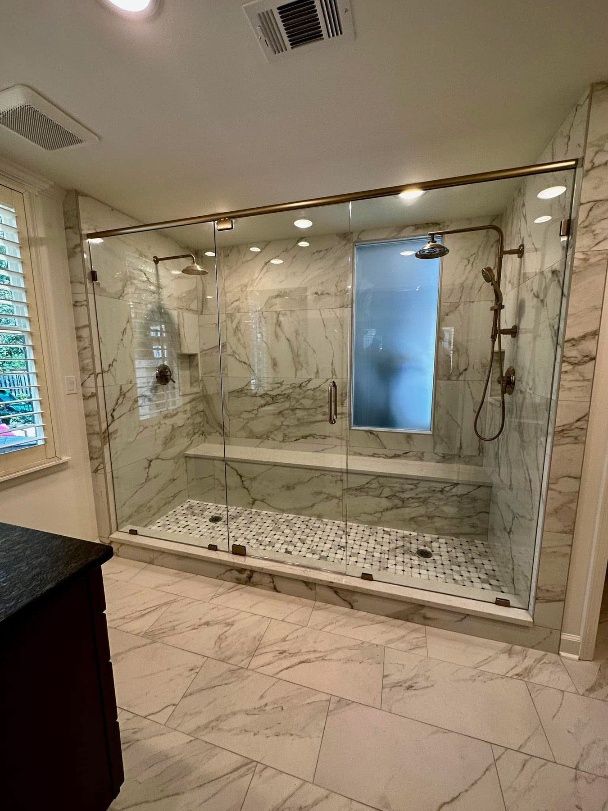

Some property owners come to us because part of their property has been damaged or keeps causing problems. Other property owners need the building to serve a new purpose, feel more comfortable, use energy more efficiently, support a different occupancy, or simply work better for everyday life. Our service portals connect inspection, design, restoration, improvement, and construction work so property owners can find the help that fits their property without trying to piece together the solution on their own.
Property & Building Restoration

When a property has been damaged, Crain Bros Inc helps the property owner move from the immediate problem toward a complete and lasting restoration. We assess the affected areas, address the conditions that can continue causing damage, clean or remediate materials when needed, verify the property is ready for the next phase, and rebuild the damaged parts of the structure. Keeping mitigation, restoration, and reconstruction connected under one primary contractor gives the property owner a clearer path from the first response through the completed work.
Services include Water Damage Restoration, Fire Damage Restoration, Mold Damage Restoration, Storm Damage Restoration, Personal Property & Contents Care, General Restoration Contracting, Framing Damage Restoration, Roofing Damage Restoration, Drywall Damage Restoration, Flooring Damage Restoration, Siding Damage Restoration.
Explore Property & Building Restoration
Remodeling

Remodeling should make an existing property work better for the people who use it. Crain Bros Inc provides custom kitchens, bathrooms and showers, whole-home renovation, cabinetry, countertops, flooring, painting, trim carpentry, plumbing, electrical, HVAC, windows, doors, insulation, and drywall. The design can address layout, storage, comfort, convenience, indoor air quality, energy use, accessibility, finishes, and the property owner's daily routines.
Services include Custom Kitchens, Custom Bathrooms, Whole-Home Renovation, Cabinetry, Countertops, Trim Carpentry, Flooring, Painting, Windows & Doors, Drywall, Plumbing, Electrical, HVAC, Insulation, Roofing, Siding, Decks, Masonry, Concrete.
Explore Remodeling Services
General Contracting

General Contracting gives property owners one qualified contractor to manage work that is more involved, more complex, or spread across several trades and building systems. Crain Bros Inc maintains the contractor licensing and good standing required for the work we undertake and manages the applicable insurance, bonding, building-code, permit, and construction responsibilities connected to the project. We plan and perform new construction, improvements, alterations, major repairs, additions, rebuilds, and other coordinated work through a managed construction process. We also work extensively with commercial buildings that need a change in function, use, or occupancy. In those projects, we help design and construct the building so it can meet the requirements and practical needs of its new purpose.
Services include Construction, Construction Management, Commercial Construction, Foundations, Custom Framing, Concrete, Masonry, Roofing, Siding, Gutters, Plumbing, Electrical, HVAC, Insulation, Drywall, Windows & Doors, Decks, Painting.
Explore General Contracting Services
Building Inspection & Diagnostics

A building should be understood before work is designed or repairs begin. Crain Bros Inc uses building science, field inspection, measurements, documentation, and an evaluation of how materials and building systems interact to understand the property and the need being reported. We investigate damage and recurring conditions, and we also inspect properties when a property owner is planning a change in use, an improvement, or work intended to improve comfort, function, efficiency, or long-term performance. The information developed through this process gives the property owner a stronger basis for deciding what should happen next.
Services include Building Inspection, Damage Assessment, Documentation Packages, Building Consulting, Scope Development, Building Code Review, Third-Party Lab Testing, Repair Planning, Independent Review.
Explore Building Inspection & Diagnostics
Foundation Repair, Drainage & Waterproofing

A stable, dry property begins with the way the structure is supported and the way water moves around, beneath, and away from the building. Crain Bros Inc evaluates foundation movement, structural support, grading, drainage, groundwater, crawlspace moisture, basement water entry, and retaining-wall needs as connected property conditions. We design and perform foundation repairs, structural support corrections, drainage improvements, waterproofing, crawlspace work, and retaining-wall construction or reconstruction around the building and the property owner's long-term needs.
Services include Foundation Construction & Repair, House Leveling and Structural Support Correction, Waterproofing, Basement Water Management, French Drains, Surface Drainage and Grading, Roof Runoff and Downspout Discharge, Erosion Correction, Crawlspace Water Investigation, Crawlspace Encapsulation, Permanent Dehumidification, Drainage and Sump Coordination, Crawlspace Monitoring, Retaining Wall Construction, Retaining Wall Reconstruction.
Explore Foundation, Drainage & Waterproofing
Emergency Response

When an emergency threatens a property, Crain Bros Inc is available to help the property owner protect the building and begin the recovery process. We respond to urgent water, fire, storm, impact, structural, and weather-related conditions, evaluate what has happened, document the affected areas, and perform the immediate work needed to reduce further damage. Our emergency response can then connect directly with the inspection, restoration, repair, and reconstruction services the property needs next.
Services include Disaster Response, Emergency Board-Up, Roof Tarping, Emergency Water Extraction, Temporary Structural Stabilization, Site Securing, Emergency Debris Removal, Building Inspection & Diagnostics, Property & Building Restoration, Water Damage Restoration.
View Emergency Response Services